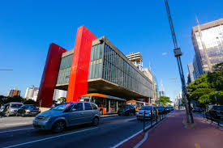

As cidades de São Paulo mais inteligentes
Conheça mais sobre o Estado de São Paulo e suas cidades inteligentes...
Quando se fala em cidades inteligentes, muita gente logo pensa em tecnologias futuristas, cheias de sensores e carros autônomos circulando por aí. Mas, na prática, uma cidade inteligente vai muito além disso. Ela busca usar a tecnologia de forma estratégica para melhorar a vida das pessoas, seja por meio da mobilidade urbana, da sustentabilidade, da educação ou até mesmo da forma como a gestão pública se relaciona com os cidadãos. No Estado de São Paulo, que é o mais populoso e um dos mais desenvolvidos do Brasil, algumas cidades vêm se destacando justamente por adotar esse modelo mais inovador e eficiente de administração. Essas cidades investem em soluções criativas para problemas do dia a dia, integram dados para tomar decisões mais inteligentes e promovem qualidade de vida por meio de políticas públicas mais conectadas com as necessidades da população. Neste conteúdo, você vai conhecer as 10+ cidades inteligentes do Estado de São Paulo — aquelas que estão na frente quando o assunto é inovação urbana. Seja pela infraestrutura tecnológica, pela forma como usam dados para planejar o futuro ou pelo jeito como engajam seus moradores, essas cidades estão dando exemplo de como é possível crescer de forma sustentável e inteligente.

Top 10 cidades mais inteligentes de SP
1°São Paulo
São Paulo é a capital do estado de São Paulo e a cidade mais populosa do Brasil, localizada na região Sudeste do país. É considerada uma metrópole global, com forte influência econômica e cultural.
 Saiba mais sobre a cidade de São Paulo2° São Caetano do sul
São Caetano do Sul é um município brasileiro do estado de São Paulo, na mesorregião Metropolitana de São Paulo e microrregião de São Paulo.
Saiba mais sobre a cidade de São Caetano do Sul3° Barueri
Barueri, localizada na região metropolitana de São Paulo, é uma cidade com rica história, que remonta ao século XVI. Hoje, é um importante centro financeiro e empresarial, reconhecido por sua qualidade de vida e investimentos em diversas áreas, incluindo economia, tecnologia, segurança e meio ambiente.
 Saiba mais sobre a cidade de Barueri
Saiba mais sobre a cidade de Barueri
4° jaguariúna
Em Jaguariúna hoje, 15 de agosto, a cidade teve eventos como a Feira Noturna no Parque Santa Maria com música sertaneja e uma capacitação para brigadas de incêndio de escolas municipais. Além disso, Jaguariúna participou da abertura da ADR da Melhor Idade em Aguaí, e a Guarda Municipal realizou apreensões de drogas em operações.
Saiba mais sobre a cidade de Jaguariúna5° Santana de Parnaíba
Santana de Parnaíba é uma cidade histórica localizada na região metropolitana de São Paulo, conhecida por seu centro histórico preservado, com 209 edificações tombadas pelo patrimônio. É considerada o berço dos bandeirantes e um importante polo turístico, atraindo visitantes com suas construções coloniais e eventos culturais.
Saiba mais sobre a cidade de santana parnaíba6° Santos
Santos é uma cidade brasileira localizada no litoral do estado de São Paulo, conhecida por seu porto, o maior da América Latina, e por sua história e cultura. Fundada em 1546, é uma das cidades mais antigas do Brasil e desempenha um papel crucial na economia do país, impulsionada pelo porto, turismo, pesca e comércio. Além disso, Santos se destaca por sua infraestrutura, beleza natural, atividades esportivas e culturais, atraindo visitantes durante todo o ano.
Saiba mais sobre a cidade de santos7° Jundiaí
Jundiaí é um município brasileiro localizado no estado de São Paulo, conhecido por sua economia diversificada, qualidade de vida e importância histórica. A cidade, situada a cerca de 60 km de São Paulo, faz parte da região metropolitana de Jundiaí, que inclui outros municípios como Várzea Paulista e Campo Limpo Paulista.
Saiba mais sobre a cidade de Jundiaí8° Campinas
Campinas é um município brasileiro no estado de São Paulo, conhecido por ser um importante centro econômico e metropolitano na região. Localizada a cerca de 90 km de São Paulo, a capital do estado, Campinas se destaca por sua logística privilegiada, incluindo rodovias modernas, aeroporto, rede ferroviária e um terminal rodoviário central. Além disso, a cidade abriga diversas universidades renomadas, como a UNICAMP e a PUC-Campinas, e centros de pesquisa, o que contribui para sua importância no cenário científico e tecnológico.
 Saiba mais sobre a cidade de Jundiaí
Saiba mais sobre a cidade de Jundiaí
9° Sorocaba
Sorocaba é um município brasileiro localizado no interior do estado de São Paulo, conhecido por seu forte desenvolvimento econômico e industrial, especialmente nos setores de máquinas, automobilístico e metalúrgico. A cidade também se destaca como capital regional e possui uma região metropolitana com 26 municípios.
Saiba mais sobre a cidade de Jundiaí10° Santo André
Santo André é um município brasileiro localizado na Região Metropolitana de São Paulo, fazendo parte do chamado ABC Paulista. É conhecida por sua história ligada à industrialização e por oferecer boa qualidade de vida aos seus moradores, com destaque para o desenvolvimento econômico e a infraestrutura.
Saiba mais sobre a cidade de Santo André